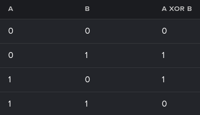

XOR Swapping is a technique used for swapping the values of two variables without the need for a temporary variable. It is done using the XOR bitwise operation and i find it really kewl.
A bitwise operation is an operation carried out on individual bits. Read more>.
Assume:
x = 110
y = 101y XOR x = 011 → store that in y
y = 011
y XOR x = 011 XOR 110 = 101 → store that in x
x = 101
// notice how we returned to the value y after doing ((x XOR y) XOR x)
y XOR x = 011 XOR 101 = 110 → store that in y
// and now we returned to the value x after doing ((x XOR y) XOR y)
x = 101
y = 110
Swapping done.Whenever an XOR operation produces a 0, both inputs should have been the same (either 0,
0 or 1, 1).
So if the result of XOR is 0 and one (known) input was 0, this
leaves no other option for the (unknown) variable but to be 0 (same applies on
1).
Whenever the result of XOR is 1, one of the inputs must be 0 and the other must be
1. So if one input is known to be 0, it follows that the other
(unknown) one is 1.
XOR works here because the process is consistent: two possible combinations produce 1 and the two others
produce 1.